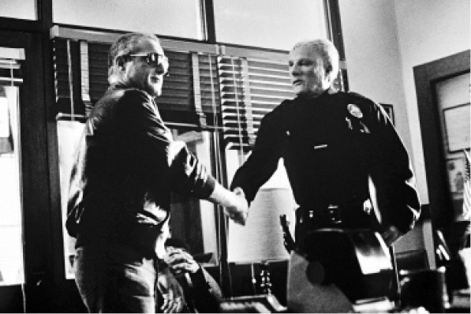

外星异族不再对地球构成威胁，这种转变的迹象在1951年的电影《地球停转之日》中就可以看到，影片中那个类人生物及其随同机器人带着善意来到了地球。阿瑟·C.克拉克1953年出版的小说《童年的终结》中，善良的外星霸主接管了人类。泽娜·亨德森的“人们”系列从20世纪50年代开始发表，这些故事断然抛弃了把外星人表现为虫眼怪物的套路，转而表现人类与外星异族之间的细微差异以及地方居民对陌生来客的反应。在她的故事中，异族的异质性并不外显在身体特征上，沃尔特·特维斯的《坠落到地球的人》（1963）也是如此。在后者中，天外来客与其说是个外星人，不如说是一个圈外人，并因为这点而受到了中央情报局和联邦调查局的审问。这个外星人对地球人不抱敌意，因为他需要地球人帮助他所在星球的人民。1976年这部小说被改编成电影，由大卫·鲍伊扮演这个类人外星人，他把头发染成了橘黄色，给故事情节增添了一种舞台效果。
显然，在这些案例中，作家使用外星人的概念来探究人类的特征，非裔美国作家奥克塔维娅·巴特勒在其1976年开始写的“模式主义者”系列小说中采用了这种技巧。《模式之主》的故事背景设定在未来，人类遭到了心灵感应者组织的统治。“模式主义者”系列小说描述了这个发源于17世纪后期、从两个不死原型演变而来的组织的秘史。《野种》（1980）描述了这个组织在奴隶制非洲的起源，并构思了多罗（男性心灵感应者）和阿尼安娃（女性变形者和生殖力的人格象征）两个人物。这两人来到美国，意识到美国文化中存在对差异的制度化压制。巴特勒的“异种移植”三部曲（1987—1989）主要讲述了外星异族翁卡利人（有三种性别，永久地被“母世界”所放逐）试图通过基因替换的手段取代人类的故事。剧中的主角利莉思从人工深眠中醒来后，发现一个灰色的、耳朵长毛并且没有鼻子的翁卡利人站在她面前，流利地对她说话。巴特勒对笔下人物的身体特征总是很敏感，总是小心翼翼地展开叙事，以求外星人的形象以及他们与地球人的差异处于不断的变换叙述中。巴特勒自己曾经说过，她的书“是关于权力的故事……我将多种族间不同性别的人聚合起来，他们必须适应他人与自己的差异，同时也要适应自身所产生的不一定能够控制得住的能力”。
如果说巴特勒用科幻构建了一段关于奴隶制的虚构历史，那么奥森·斯科特·卡德1986年出版的小说《死者代言人》就是对南美洲殖民地历史的想象性重构。这部小说的背景设定在未来的卢西塔尼亚殖民地，坡奇尼奥（在西班牙语中有“小个子”的意思）是当地的土著，被人类霸主关在牢笼内以供研究。小说探究了两个族群之间交流所遇到的复杂难题。厄休拉·勒奎恩1976年出版的小说《代表世界的词是森林》通过科幻的形式对越南战争表达了一种批判，与此类似的是，卡德的叙事将从西方与无文字文明的权力关系中产生的误解戏剧化了。
同样，格温妮斯·琼斯将自己笔下的外星异族命名为“阿留申人”，也是巧妙地暗示了人类当中身处于偏远地带的边缘化人群（阿留申人受到俄国人和美国人的双重欺压）。她称《阿留申人三部曲》（1991—1997）的写作动机是要反对征服与被征服的达尔文主义范式。这些外星异族同人类的接触是渐进式的，他们体现出非洲和亚洲文化的特征，但同时又没有性别。用她自己的话来说，阿留申人以“女性”和“土著人”为蓝本，并且体现了对有声语言的怀疑。她怀疑有声语言，是因为“语词造成分裂”，但是作为作家的她又不得不在纸上用语词表现阿留申人那种沉默又能心灵相通的交流能力，这和用非标准的语音标记记录人类语言是类似的。出于这个道理，她意识到自己“把阿留申人表现得非常像女权主义者——死心塌地地要求拥有完全的自由，一心一意要成为有自我意识的、有良好口才的公众人物，而不是放弃自己在自然世界中的位置”。

图7 格拉汉姆·贝克《外星民族》（1988）的剧照
1988年的电影《外星民族》将异族主题重新聚焦到了美国国内的种族问题上。电影开头处，一艘巨大的飞碟降落在莫哈维沙漠上，在这样一个拼贴式的开场之后，一个新闻广播员告诉观众，飞碟载来了成千上万的类人生物，他们是经过基因设计充当奴工的。这些外来者在身份为人所知之后，定居在洛杉矶和旧金山。电影描述了这些外来者到地球三年后所受的待遇，这也是此类小说的常见手法。通过一种警察——搭档做犯罪调查的模式，电影把这些外来者塑造成新的社会底层，甚至被华裔、非裔、拉丁裔美国人嘲弄和嫌弃。
换言之，通过对异化的白人警察赛克斯和他的外星人搭档弗朗西斯科之间关系发展的描写，电影用外星人入侵表达了对种族主义和民族同化的看法。这个主题处理起来相对轻松，因为在电影中，这些外来者的头部和地球人有所区别，让观众觉得外星人长相都一样，但看起来又像地球人。后来有两部出版物借用了电影的片名，标题都叫作《外星民族》。彼得·布赖姆洛1995年出版的书抨击了美国鼓励第三世界移民的政策，坎农·施密特1997年的研究专著讨论了19世纪哥特小说的民族潜台词。